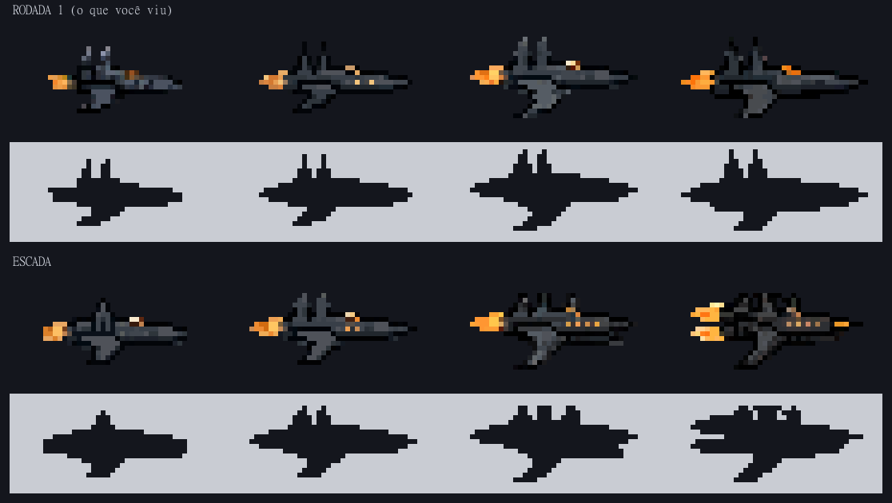
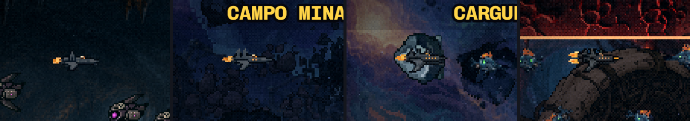
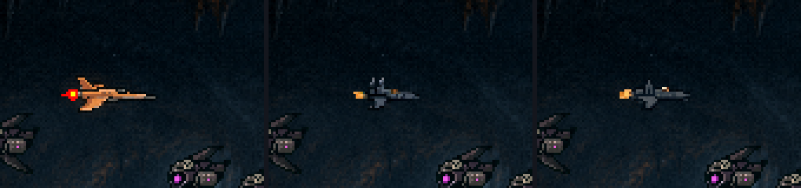
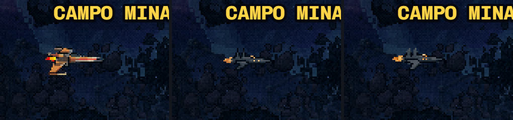
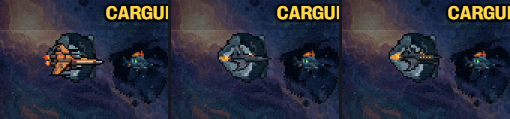
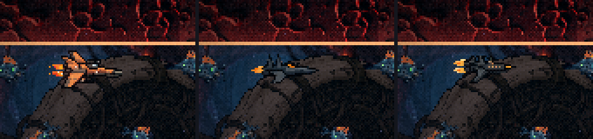

A Gótica · a escada dos tiers (rodada 1b)
23/10/2026 · ← a rodada 1 (as três direções) · → recusada; o teste de detalhe (1c) ·Você escolheu a Gótica e apontou: "não existe mudança quase nenhuma entre os tiers". Aqui ela foi refeita para que cada tier ganhe algo que se vê na silhueta. Nada instalado; a hitbox (21×9) não muda.
Por que a rodada 1 saiu igual: a T0, a T1 e a T3 foram geradas com a T2 como "referência de assunto", e o PixelLab copia a forma do assunto. Saiu a mesma nave quatro vezes, só esticada.
O que mudou: cada tier foi gerado com a nave inteira descrita e com o que ela tem contado peça por peça, sem nave de referência, só com um estilo. A T3 foi a exceção: teve a T2 nova como estilo, para nascer como "a T2 a mais".
A escada

| Tier | Nome | O que ela ganha | Desenho |
|---|---|---|---|
| T0 | Capela | Uma torre, em arco ogival; só uma aleta embaixo; um motor pequeno; só a cabine acesa. | 30×14 |
| T1 | Igreja | Duas torres; a asa-lâmina curvada para baixo aparece; duas janelas acesas. | 35×15 |
| T2 | Abadia | Três torres (a do arco da T0 volta na ponta); o canhão sob o nariz; motor maior; uma fileira de quatro janelas. | 35×16 |
| T3 | Catedral | O topo vira catedral, com uma torre central alta; motor duplo, duas chamas; as quatro janelas e a ponta do canhão acesa. | 36×16 |
A luz cresce com o tier, como as janelas acesas da colônia no menu: mais energia, mais luz (a regra do dark sci-fi). A T3 tem 16 px de altura (hoje 22, rodada 1 17).
No jogo (cada tier na fase em que voa, com o tratamento de imagem da fase por cima)





O que ainda não está bom
- A T1 e a T2 têm o mesmo comprimento (35). A diferença entre elas está nas torres, no canhão e nas janelas, não no tamanho. A rodada 2 acerta os comprimentos (por exemplo 30 → 32 → 34 → 36).
- A T3 é mais escura que a T2: mais contorno preto no topo da catedral. Lê como blindagem, mas pode ser retocada para o casco voltar ao cinza da T2.
- As chamas aqui são paradas. A animada (8 quadros, e a azul da carta Propulsores) vem na rodada 2. A T3 terá duas.
Como saiu
- PixelLab Pro, 64 candidatas por leva, cada uma aberta ampliada. Dois estilos testados: a
ship-cinzadeu cascos escuros e embaralhados, sem torres legíveis, e ficou de fora. A Gótica T2 da rodada 1 deu o casco limpo das quatro escolhidas. - Duas levas da T1 saíram "dando a volta": a nave mais comprida que o quadro, com o nariz encostado na própria chama do outro lado. A T1 foi refeita num quadro de 36 px.
- A T2 nova como estilo deu a melhor T3. Na T0 e na T1 ela fez cópias da T2 (a fileira de janelas, várias torres), então não foi usada nelas.
- ~140 gerações (restam 1967). As candidatas estão em
naves/cru/escada/. Scripts:scripts/_naves/_gerar-goticas.mjse_montar-goticas.mjs.
O que você decide
- A escada: se a evolução Capela → Igreja → Abadia → Catedral está boa, ou se algum degrau deve mudar (por exemplo, a T3 com menos topo, ou a T1 sem as janelas).
- Os retoques: o comprimento alinhado tier a tier e a T3 mais clara, ou outra coisa que você notar.
- Depois, a rodada 2: os retoques e as chamas animadas, e então a instalação no jogo.